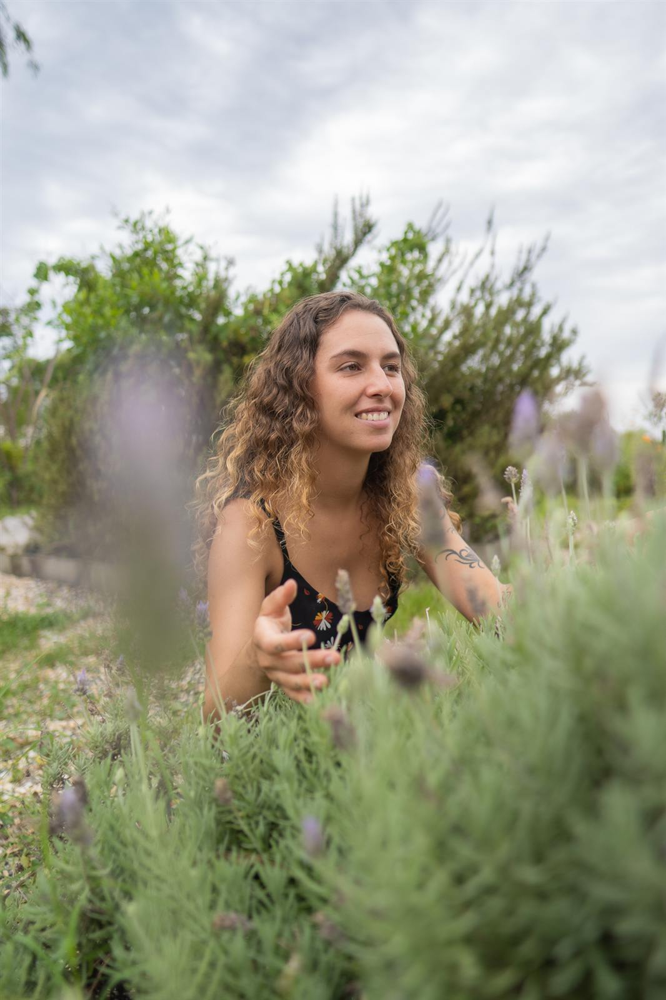

Consultas, retiros femininos e programas terapêuticos que unem fitoterapia, plantas medicinais, ginecologia natural, mentalidade e neurociência — para menopausa, endometriose, SOP, ansiedade, dores crônicas e muito mais.
Falar no WhatsApp
Naturologia e ginecologia natural online — tratamento natural para menopausa, endometriose, SOP, cólica e infecção urinária.
Ver consultas →Retiro para mulheres em Barra do Una: 4 dias de imersão com yoga, rituais e reconexão com a natureza feminina.
Ver retiro →Programa de 3 meses com fitoterapia e mentalidade para dores e doenças crônicas femininas.
Conhecer o ciclo →Saúde integrativa feminina unindo naturologia, mentalidade e neurociência em um só lugar.
Entrar na lista →7 dias de desintoxicação natural com plantas medicinais e preparados caseiros.
Fazer o detox →Conteúdos gratuitos sobre saúde feminina natural, fitoterapia e mentalidade.
Ver vídeos →Naturóloga especializada em saúde integral feminina, com foco em três pilares: saúde, autoconhecimento e espiritualidade. Acredito que tratar a causa raiz dos sintomas — e não apenas os sintomas — é o caminho para uma transformação real e duradoura.
Tratamentos naturais para menopausa, endometriose, síndrome do ovário policístico (SOP), ansiedade, dermatite, infecção urinária, candidíase de repetição, cólica, dor de cabeça, enxaqueca e fertilidade — através de ginecologia natural, fitoterapia, plantas medicinais, preparados caseiros, mentalidade e neurociência aplicada à saúde feminina.